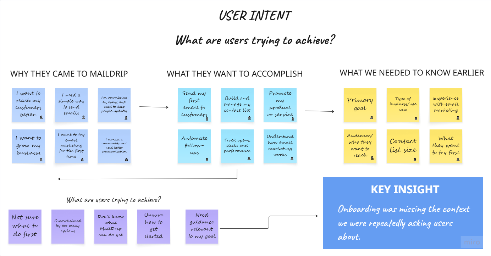
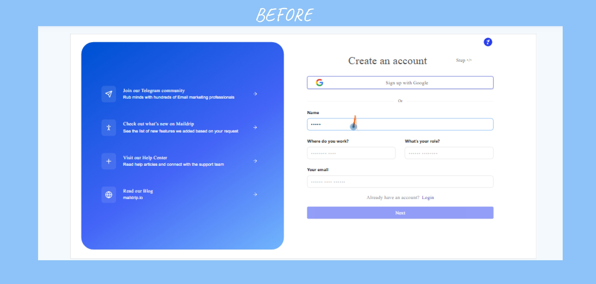
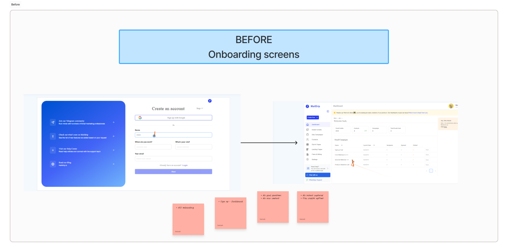
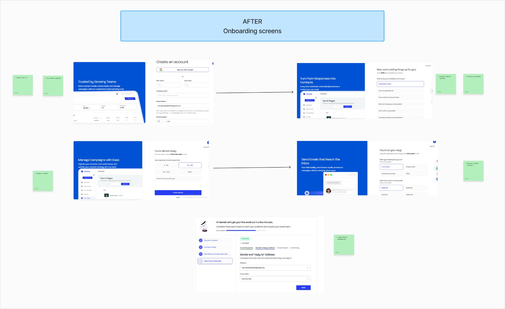
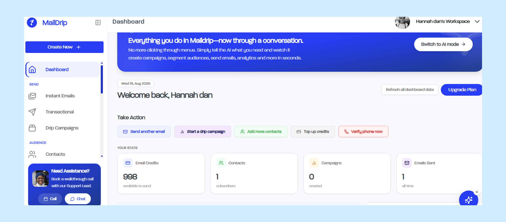

Improving User Onboarding & Activation
MailDrip — Understanding User Intent Before the First Campaign
Lead UX Researcher • User Interviews • Onboarding Research • JTBD-Informed Research • Competitor Analysis • Walkthrough Calls • User Feedback Analysis
Methods Used
6
Onboarding Questions Developed
5
Key Findings
3
Focus
Activation & Intent
The Challenge
MailDrip gave new users free email credits when they signed up, but many users were not using them.
The problem wasn't simply that users were failing to send an email. We needed to understand what brought people to MailDrip in the first place, what they hoped to accomplish, and what was getting in the way of taking that first meaningful action.
At the time, the onboarding experience captured very little about a user's goals or context. Someone could sign up as a business owner, event organiser, community manager, or email marketer, yet the experience largely treated them the same.
This created a gap between signing up and knowing what to do next.
I wanted to understand:
- Why were users signing up but not using their free email credits?
- What were they actually trying to accomplish?
- What did they expect MailDrip to help them do?
- How many contacts did they already have?
- What type of business, community, or audience were they managing?
- What prevented them from taking the first meaningful action?
- What information could we capture earlier to make the experience more relevant?
The goal was not simply to get users through onboarding.
It was to understand user intent early enough to help people reach value faster.

Why This Research Mattered
A sign-up does not necessarily mean a user understands the product, has found the right use case, or is ready to take action.
Through repeated conversations with new users, I began noticing a pattern: people were arriving with very different goals, but the onboarding experience gave us very little information about those goals.
Some users wanted to communicate with existing customers.
Others wanted to grow a contact list, promote an event, manage a community, or understand how email marketing could support their business.
The same onboarding experience could not easily help all of these users understand what MailDrip could do for them.
This made user intent an important part of activation.
If we could understand what a user wanted to achieve from the beginning, we could make better decisions about:
- What guidance they needed
- Which features were relevant to them
- How their experience should be personalised
- How we could support their first meaningful action
- How we could understand activation beyond simply counting sign-ups
My Role
Lead UX Researcher
I investigated onboarding behaviour through a combination of structured and ongoing research activities.
My work included:
- Speaking directly with new and existing users
- Conducting onboarding conversations
- Running walkthrough calls
- Asking users about their goals, business context, audience, and expectations
- Analysing recurring user feedback
- Identifying patterns in why users were not taking action
- Connecting findings to earlier Jobs-to-be-Done research
- Reviewing competitor onboarding experiences
- Bringing research findings back to Product and Design
- Helping shape the questions and information captured during onboarding
- Following how the resulting information could support activation, segmentation, and future research
This was not a single research session.
It was an ongoing process of learning from users as they entered and tried to understand the product.
Research Approach
Rather than relying on sign-up numbers alone, I focused on understanding what happened between registration and meaningful product use.
01
User Interviews
I spoke directly with users about why they signed up, what they wanted to achieve, what they expected from MailDrip, and what they were trying to do with their available email credits.
02
Onboarding Evaluation
I examined what information the existing onboarding captured and where important context about the user's goals was missing.
03
Walkthrough Calls
During walkthrough calls, I asked users what they wanted to accomplish before taking them through the product. This helped reveal differences between what users expected to do and what the product experience was asking them to do.
04
JTBD-Informed Research
The earlier Jobs-to-be-Done research helped provide a useful lens for understanding users through their underlying goals rather than simply categorising them by features or demographics.
05
User Feedback Analysis
Repeated conversations made it possible to identify patterns across users rather than treating each onboarding interaction as an isolated issue.
06
Competitor Analysis
I also reviewed how other products approached onboarding, user intent, activation, and the early product experience to identify patterns and opportunities for MailDrip.

What We Found
01 — Sign-Up Did Not Equal Activation
Users could successfully create an account and receive free email credits without necessarily understanding what they wanted to do next.
The free credits created an opportunity to experience MailDrip, but simply giving users credits did not guarantee that they would use them.
The more important question became:
What would help a new user move from signing up to taking a meaningful first action?
02 — Users Arrived With Different Goals
Through onboarding conversations and walkthrough calls, I found that users had very different reasons for trying MailDrip.
Some wanted to:
- Communicate with customers
- Promote products or services
- Manage a community
- Organise an event
- Build or manage a contact list
- Try email marketing for the first time
- Automate communication
- Understand whether email could help their business
The product needed to understand these differences earlier.
This connected directly to the Jobs-to-be-Done research: users did not necessarily think of themselves as "email marketers."
They thought about what they were trying to accomplish.
03 — Important Context Was Missing From Onboarding
The existing onboarding experience did not ask enough questions about the user's goals or situation.
Through repeated conversations, I found myself asking the same questions manually:
What are you trying to achieve?
What brought you to MailDrip?
What do you want to try first?
How many contacts do you currently have?
What type of business or audience are you working with?
These questions were valuable because they gave us information that the existing onboarding was not collecting.
The research suggested that some of this context should not depend entirely on a researcher or customer-support person having a conversation with every new user.
It needed to become part of the product experience.

From Research to Product Direction
The findings led to a shift in how we thought about onboarding.
Instead of treating onboarding primarily as a sign-up process, we began treating it as an opportunity to understand who the user was, what they wanted to accomplish, and what kind of experience would be relevant to them.
That led to several product directions.
Capture User Intent Earlier
We introduced questions into onboarding to understand:
- What the user wanted to achieve
- What they wanted to try
- Their business or use-case context
- The size of their existing contact base
- The type of audience they were communicating with
This meant the product could begin collecting useful context without requiring every user to explain everything manually.
Encourage a Meaningful First Action
We also introduced an activation step around access to free email credits.
Rather than making the free credits completely disconnected from the user's first interaction with the product, the experience encouraged users to take a meaningful action within the platform before receiving the additional free usage.
The purpose was not to create unnecessary friction or exclude users.
It was to encourage users to begin engaging with the product while giving the team a better signal of what users were actually trying to accomplish.
This created a stronger connection between:
Sign Up → Intent → First Action → Product Value

Connect Onboarding to Personalisation
The information collected during onboarding also created a stronger foundation for understanding user intent across the product.
This was especially relevant as the team worked on areas such as tags, attributes, segmentation, and personalised experiences.
Instead of only seeing a contact as a generic record, understanding a user's goals and context could help the product think more meaningfully about:
- Who the user was trying to reach
- What they were trying to accomplish
- Which audiences mattered to them
- How different groups could be organised
- What product guidance might be relevant
The onboarding research therefore became connected to a broader product question:
How can we use what we learn about users to make the product more relevant to them?
Competitive Insight
I also reviewed competitor experiences to understand how other products approached onboarding, activation, and early user intent.
The research showed that onboarding could do more than simply collect account information.
It could help a product understand:
- User goals
- Intended use cases
- Audience context
- Experience level
- What users were trying to accomplish first
This reinforced the opportunity to make MailDrip's onboarding more intentional.
The goal was not to copy competitor flows.
It was to understand what patterns existed in the market and identify where MailDrip could better connect onboarding with the user's actual goals.
What Changed
The research contributed to a shift from a largely generic onboarding experience toward one that captured more information about user intent and intended outcomes.
The work helped shape:
- Goal-oriented onboarding questions
- More intentional activation
- Earlier visibility into user intent
- Better understanding of users' business and audience context
- Opportunities for more personalised product experiences
- Stronger foundations for segmentation, tags, and attributes
- Better understanding of which users were likely to need different forms of guidance
- More informed conversations between Research, Product, and Design
The research also reduced our dependence on discovering this information only after a user was already struggling.
Instead, the product could begin learning from users earlier in their journey.

Impact
The work helped change how the team thought about activation.
Instead of viewing onboarding as:
"A user signed up."
We could ask:
"What is this user trying to accomplish, and what do they need to reach their first meaningful outcome?"
"A user signed up."
"What is this user trying to accomplish, and what do they need to reach their first meaningful outcome?"
The research contributed to:
- Better visibility into user intent from the beginning of the journey
- A more intentional onboarding experience
- Stronger activation signals
- Better understanding of different user goals and use cases
- Opportunities for more relevant product guidance
- A stronger foundation for segmentation and user attributes
- Better-informed product and design decisions
- More targeted conversations with users during onboarding
- A clearer connection between research findings and product direction
Most importantly, the work helped move user understanding from something discovered mainly through individual conversations into something the product itself could begin capturing and learning from.
Validation
The onboarding changes also created an opportunity to continue learning after implementation.
I used user conversations and walkthroughs to understand whether the new questions made sense, whether users could clearly communicate what they wanted to achieve, and whether the information being captured reflected real user intent.
This reinforced an important principle in my research practice:
Validation does not stop when a feature is designed or launched.
A prototype can tell us whether an idea makes sense.
A real product tells us whether it continues to work when people actually use it.

Key Insight
Users didn't need more free credits first. They needed a clearer path to value.
The research showed that activation was not only about giving users access to more product usage.
It was about understanding what they came to accomplish and helping them take the right first step toward that goal.
When we began capturing that intent earlier, onboarding became more than an entry point.
It became a way for the product to learn from its users and create a more relevant path forward.
Project Reflection
This project reinforced the importance of listening to users continuously, not only when a formal research study is scheduled.
Some of the most useful insights came from repeated conversations during onboarding and walkthroughs — asking simple questions, noticing patterns, bringing those patterns back to the team, and then seeing how they could influence the product itself.
It also showed me that activation is rarely just a metric.
Behind every sign-up, drop-off, or unused credit is a user trying to accomplish something.
Good onboarding starts by understanding what that something is.